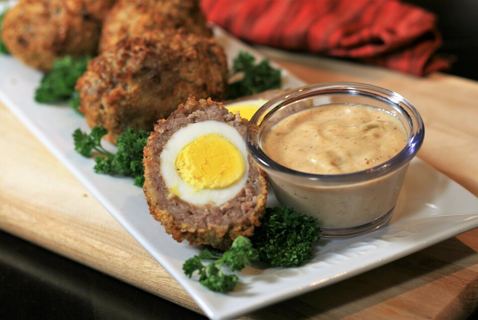

Scotch eggs

Description
Air Fryer Scotch Eggs
Ingredients
- 3 tablespoons Greek yogurt
- 2 tablespoons mango chutney (such as Patak's®)
- 1 tablespoon mayonnaise
- ⅛ teaspoon salt
- ⅛ teaspoon pepper
- ⅛ teaspoon curry powder
- ⅛ teaspoon cayenne pepper (Optional)
- 1 pound pork sausage (such as Jimmy Dean®)
- 6 eggs, hard-boiled and shelled
- ⅓ cup flour
- 2 eggs, lightly beaten
- 1 cup panko bread crumbs
- cooking spray
Steps
- Combine yogurt, chutney, mayonnaise, salt, pepper, curry powder, and cayenne in a small bowl. Refrigerate until ready to use.
- Divide pork sausage into 6 even portions. Flatten each portion into a thin patty. Place one egg in the middle and wrap the sausage around the eggs, sealing all sides. Set eggs aside on a plate.
- Preheat air fryer to 390 degrees F (200 degrees C).
- Place flour into a small bowl and beaten eggs into another small bowl. Place panko bread crumbs onto a plate. Dip each sausage-wrapped egg into flour, then dip into beaten egg, letting the excess drip off. Roll in bread crumbs and place onto a plate.
- Spray basket of the air fryer with cooking spray and place eggs into the basket. Do not overcrowd; cook in batches if necessary. Cook for 12 minutes, turning eggs over halfway through. Repeat with remaining eggs. Serve with dipping sauce.